Глава 20. Принципи на обектно-ориентираното програмиране
Автор
Михаил Стойнов
В тази тема...
В настоящата тема ще се запознаем с принципите на обектно-ориентираното програмиране: наследяване на класове и имплементиране на интерфейси, абстракция на данните и поведението, капсулация на данните и скриване на информация за имплементацията на класовете, полиморфизъм и виртуални методи. Ще обясним в детайли принципите за свързаност на отговорностите и функционално обвързване (cohesion и coupling). Ще опишем накратко как се извършва обектно-ориентирано моделиране и как се създава обектен модел по описание на даден бизнес проблем. Ще се запознаем с езика UML и ролята му в процеса на обектно-ориентираното моделиране. Накрая ще разгледаме съвсем накратко концепцията "шаблони за дизайн" и ще дадем няколко типични примера за шаблони, широко използвани в практиката.
Да си припомним: класове и обекти
Класовете са описание (модел) на реални предмети или явления, наречени същности (entities). Например класът "Студент".
Класовете имат характеристики – в програмирането са наречени свойства (properties). Например съвкупност от оценки.
Класовете имат и поведение – в програмирането са наречени методи (methods). Например явяване на изпит.
Методите и свойствата могат да бъдат видими и невидими – от това зависи дали всеки може да ги използва или са само за вътрешна употреба в рамките на класа.
Обектите (objects) са екземпляри (инстанции) на класовете. Например Иван е Студент, Петър също е студент.
Обектно-ориентирано програмиране (ООП)
Обектно-ориентираното програмиране е наследник на процецурното (структурно) програмиране. Процедурното програмиране най-общо казано описва програмите чрез група от преизползваеми парчета код (процедури), които дефинират входни и изходни параметри. Процедурните програми представляват съвкупност от процедури, които се извикват една друга.
Проблемът при процедурното програмиране е, че преизползваемостта на кода е трудно постижима и ограничена – само процедурите могат да се преизползват, а те трудно могат да бъдат направени общи и гъвкави. Няма лесен начин да се реализират абстрактни структури от данни, които имат различни имплементации.
Обектно-ориентираният подход залага на парадигмата, че всяка програма работи с данни, описващи същности (предмети и явления) от реалния живот. Например една счетоводна програма работи с фактури, стоки, складове, наличности, продажби и т.н.
Така се появяват обектите – те описват характеристиките (свойства) и поведението (методи) на тези същности от реалния живот.
Основни предимства и цели на ООП – да позволи по-бърза разработка на сложен софтуер и по-лесната му поддръжка. ООП позволява по лесен начин да се преизползва кода, като залага на прости и общоприети правила (принципи). Нека ги разгледаме.
Основни принципи на ООП
За да бъде един програмен език обектно-ориентиран, той трябва не само да позволява работа с класове и обекти, но и трябва да дава възможност за имплементирането и използването на принципите и концепциите на ООП: наследяване, абстракция, капсулация и полиморфизъм. Сега ще разгледаме в детайли всеки от тези основни принципи на ООП.
- Наследяване (Inheritance)
Ще обясним за как йерархиите от класове подобряват четимостта на кода и позволяват преизползване на функционалност.
- Абстракция (Abstraction)
Ще се научим да виждаме един обект само от гледната точка, която ни интересува, и да игнорираме всички останали детайли.
- Капсулация (Encapsulation)
Ще се научим да скриваме ненужните детайли в нашите класове и да предоставяме прост и ясен интерфейс за работа с тях.
- Полиморфизъм (Polymorphism)
Ще обясним как да работим по еднакъв начин с различни обекти, които дефинират специфична имплементация на някакво абстрактно поведение.
Наследяване (Inheritance)
Наследяването е основен принцип от обектно-ориентираното програмиране. То позволява на един клас да "наследява" (поведение и характеристики) от друг, по-общ клас. Например лъвът е от семейство котки. Всички котки имат четири лапи, хищници са, преследват жертвите си. Тази функционалност може да се напише веднъж в клас Котка и всички хищници да я преизползват – тигър, пума, рис и т.н.
Как се дефинира наследяване в Java?
Наследяването в Java става с ключовата дума extends. В Java и други модерни езици за програмиране един клас може да наследи само един друг клас (single inheritance), за разлика от C++, където се поддържа множествено наследяване (multiple inheritance). Ограничението е породено от това, че при наследяване на два класа с еднакъв метод е трудно да се реши кой от тях да се използва (при C++ този проблем е решен много сложно). В Java могат да се наследяват множество интерфейси, за които ще говорим по-късно.
Класът, който наследяваме, се нарича клас-родител или още базов клас (base class, super class).
Наследяване на класове – пример
Да разгледаме един пример за наследяване на класове в Java. Ето как изглежда базовият (родителски) клас:
|
Felidae.java |
|
package introjavabook;
public class Felidae { // Latin word for "cat"
private boolean male;
public Felidae() { this(true); }
public Felidae(boolean male) { this.male = male; }
public boolean isMale() { return male; }
public void setMale(boolean male) { this.male = male; } } |
Ето как изглежда и класът-наследник Lion:
|
Lion.java |
|
package introjavabook;
public class Lion extends Felidae { private int weight;
public Lion(boolean male, int weight) { super(male); // Shall be explained in the next paragraph this.weight = weight; }
public int getWeight() { return weight; }
public void setWeight(int weight) { this.weight = weight; } } |
Ключовата дума super
В горния пример в конструктора на Lion използваме ключовата дума super. Тя указва да бъде използван базовият клас и позволява достъп до негови методи, конструктори и член-променливи. Със super() можем да извикваме конструктор на базовия клас. Със super.method() можем да извикваме метод на базовия клас, да му подаваме параметри и да използваме резултата от него. Със super.field можем да вземем стойността на член-променлива на базовия клас или да й присвоим друга стойност.
В Java наследените от базовия клас методи могат да се пренаписват (override). Това означава да им се подмени имплементацията, като оригиналният сорс код от базовия клас се игнорира, а на негово място се написва друг код. Повече за пренаписването на методи ще обясним в секцията "Виртуални методи".
Можем да извикваме непренаписан метод от базовия клас и без super. Употребата на ключовата дума е необходима само ако имаме пренаписан метод или променлива със същото име в наследения клас.
|
|
super може да се използва изрично, за яснота. super. method() извиква метод, който задължително е от базовия клас. Такъв код се чете по-лесно, защото знаем къде да търсим въпросния метод. Имайте предвид, че ситуацията с this не е такава. this може да означава както метод от конкретния клас, така и метод от който и да е базов клас. |
Можете да погледнете примера в секцията нива на достъп при наследяване. В него ясно се вижда до кои членове (методи, конструктори и член-променливи) на базовия клас имаме достъп.
Конструкторите при наследяване
При наследяване на един клас, нашите конструктори задължително трябва да извикат конструктор на базовия клас, за да може и той да инициализира член-променливите си. Ако не го направим изрично, в началото на всеки наш конструктор компилаторът поставя извикване на базовия конструктор без параметри: super(). Ако базовият клас няма конструктор по подразбиране (без параметри), нашите конструктори трябва да извикат изрично някои от другите конструктори на базовия клас. Липсата на изрично извикване предизвиква грешка при компилация.
Конструкторите и super – пример
Разгледайте класа Lion от последния пример, той няма конструктор по подразбиране. Да разгледаме следния клас-наследник на Lion:
|
AfricanLion.java |
|
package introjavabook;
public class AfricanLion extends Lion {
// ...
public AfricanLion(boolean male, int weight) { // If we comment the next line, AfricanLion // will not compile. Try it. super(male, weight); }
public String toString() { return String.format( "(AfricanLion, male: %s, weight: %s)", this.isMale(), this.getWeight() ); }
// ... } |
Ако закоментираме или изтрием реда "super(male, weight);", класът AfricanLion няма да се компилира. Опитайте.
|
|
Извикването на конструктор на базов клас трябва винаги да е на първия ред от нашия конструктор. Иначе компилаторът дава грешка. Идеята е полетата на базовия клас да бъдат инициализирани преди да започнем да инициализираме полета в класа-наследник, защото може те да разчитат на някое поле от базовия клас. |
Нива на достъп при наследяване
В главата "Дефиниране на класове" разгледахме нивата на достъп за свойствата и методите: public, private и default (friendly). Освен тях в Java има и още едно ниво на достъп – protected. То е свързано с наследяването.
Когато се наследява един базов клас:
- Всички негови public и protected методи и свойства са видими за класа наследник.
- Всички негови private методи и свойства не са видими за класа наследник.
- Всички негови default (friendly) методи и свойства са видими за класа наследник само ако базовият клас и наследникът са в един и същ пакет (package).
Ето един пример, с който ще демонстрираме нивата на видимост при наследяване:
|
Felidae.java |
|
package introjavabook;
public class Felidae { // Latin for cat
private boolean male;
public Felidae() { // Call another constructor with default values this(true); }
public Felidae(boolean male) { this.male = male; }
//... } |
Ето как изглежда и класът Lion:
|
Lion.java |
|
package introjavabook;
public class Lion extends Felidae { private int weight;
public Lion(boolean male, int weight) { super(male); // visible - Felidae's public constructor. super.male = male; // invsible – male is private. this.weight = weight; }
//... } |
Ако се опитаме да компилираме този пример, ще получим грешка, тъй като private променливата male от класа Felidae не е достъпна от класа Lion.
Класът Object
Появата на обектно-ориентираното програмиране de facto става популярно с езика C++. В него често се налага да се пишат класове, които трябва да работят с обекти от всякакъв тип. В C++ този проблем се решава по начин, който не се смята за много обектно-ориентиран стил (чрез използване на указатели).
Архитектите на Java поемат в друга посока. Те създават клас, който всички други класове пряко или косвено да наследяват и до който всеки обект може да бъде преобразуван. В този клас е удобно да бъдат сложени важни методи и тяхната имплементация по подразбиране. Този клас се нарича Object.
В Java всеки клас, който не наследява друг клас изрично, наследява системния клас java.lang.Object по подразбиране. За това се грижи компилаторът. Всеки клас, който наследява друг клас, наследява индиректно Object от него. Така всеки клас явно или неявно наследява Object и има в себе си всички негови методи и полета.
Благодарение на това свойство всеки обект може да бъде преобразуван до Object. Типичен пример за ползата от неявното наследяване на Object е при колекциите, които разгледахме в главите за структури от данни. Списъчните структури (например ArrayList) могат да работят с всякакви обекти, защото ги разглеждат като инстанции на класа Object.
Java, стандартните библиотеки и Object
В Java има много предварително написани класове (вече разгледахме доста от тях в главите за колекции, текстови файлове и символни низове). Тези класове са част от Java платформата – навсякъде, където има Java, ги има и тях. Тези класове се наричат стандартни клас-библиотеки – standard class libraries.
Java е първата платформа, която идва с такъв богат набор от предварително написани класове. Голяма част от тях работят с Object, за да могат да бъдат използвани на възможно най-много места.
В Java има и доста библиотеки, които могат да се добавят допълнително и съвсем логично се наричат просто клас-библиотеки или още външни библиотеки.
Object – пример
Нека разгледаме класа Object с един пример:
|
ObjectExample.java |
|
package introjavabook;
public class ObjectExample { public static void main(String... args) { AfricanLion africanLion = new AfricanLion(); // Implicit casting Object object = africanLion; } } |
В този пример преобразувахме един AfricanLion в Object. Тази операция се нарича upcasting и е позволена, защото AfricanLion е непряк наследник на класа Object.
Методът Object.toString()
Един от най-използваните методи, идващи от класа Object, е toString(). Той връща текстово представяне на обекта. Всеки обект има такъв метод и следователно всеки метод има текстово представяне. Този метод се използва, когато отпечатваме обект чрез System.out.println().
Object.toString() – пример
Ето един пример, в който извикваме toString() метода:
|
ToStringExample.java |
|
package introjavabook;
public class ToStringExample { public static void main(String... args) { AfricanLion africanLion = new AfricanLion(); System.out.println(africanLion.toString());
// Result: "introjavabook.AfricanLion@de6ced" } } |
Тъй като AfricanLion не пренаписва (override) метода toString(), в конкретния случай се извиква имплементацията от базовия клас. Lion и Felidae също не пренаписват този метод, следователно се извиква имплементацията, наследена от класа java.lang.Object. В резултата, който виждаме по-горе, се съдържа пакетът на обекта, името на класа, както и странна стойност след @ знака. Това всъщност е хеш кодът на обект в шестнайсетична бройна система. Това не е адресът в паметта, а някаква друга стойност. Обикновено тази стойност е различна за различните оебкти.
Eто я и оригиналната имплементация на метода Object.toString(), извадена от сорс кода на стандартните библиотеки в Java:
|
Object.java |
|
Public class Object { // ... public String toString() { return getClass().getName() + "@" + Integer.toHexString(hashCode()); } // ... } |
Пренаписване на toString() – пример
Нека сега ви покажем колко полезно може да е пренаписването на метода toString(), наследено от java.lang.Object:
|
AfricanLion.java |
|
public class AfricanLion extends Lion {
// ...
public AfricanLion(boolean male, int weight) { super(male, weight); }
public String toString() { return String.format( "(AfricanLion, male: %s, weight: %s)", this.isMale(), this.getWeight()); }
// ... } |
В горния код използваме String.format(String format, Object... args) метода, за да форматираме резултата по подходящ начин. Ето как можем след това да извикваме пренаписания метод toString():
|
ToStringExample.java |
|
package introjavabook;
public class ToStringExample {
public static void main(String... args) {
AfricanLion africanLion = new AfricanLion(true, 15); System.out.println(africanLion);
// Result: "[AfricanLion, male: true, weight: 15]" } } |
Забележете, че извикването на toString() става скрито. Когато на метода println() подадем някакъв обект, този обект първо се преобразува до стринг чрез toString() метода му и след това се отпечатва в изходния поток. Така при печатане на конзолата няма нужда изрично да преобразуваме обектите до стринг.
|
|
Ако ползваме средата Eclipse и искаме да сме сигурни, че пренаписваме метод, можем да следим за зелен триъгълник, който показва, че нашият метод пренаписва друг: 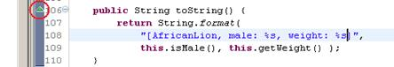 |
От Java 5 нататък има начин да укажем изрично на компилатора, че искаме нашият метод да пренаписва друг. За целта се използват се т. нар. анотации, а в конкретния случай се използва анотацията @Override:
|
AfricanLion.java |
|
public class AfricanLion extends Lion { // ...
@Override public String toString() { return String.format( "(AfricanLion, male: %s, weight: %s)", this.isMale(), this.getWeight()); }
// ... } |
Изричното указване на компилатора, че искаме да пренапишем метод от базов клас, е препоръчителна практика и намалява грешките. Ако си създадем навика при пренаписване на метод винаги да ползваме анотацията @Override, ако случайно сбъркаме една буква от името на метода или типовете на неговите параметри, компилаторът веднага ще ни съобщи за грешката.
Транзитивност при наследяването
В математиката транзитивност означава прехвърляне на взаимоотношения. Нека вземем операцията "по-голямо". Ако А>В и В>С, то можем да заключим, че А>С. Това означава, че релацията "по-голямо" (>) е транзитивна, защото може еднозначно да бъде определено дали А е по-голямо от С или обратното.
Ако клас Lion наследява клас Felidae, а клас AfricanLion наследява клас Lion, това индиректно означава, че AfricanLion наследява Felidae. Следователно AfricanLion също има свойство male, което е дефинирано във Felidae. Това полезно свойство позволява определена функционалност да бъде описана в най-подходящия за нея клас.
Транзитивност – пример
Ето един пример, който демонстрира транзитивността при наследяване:
|
TransitiveInheritance.java |
|
package introjavabook;
public class TransitiveInheritance {
public static void main(String... args) {
AfricanLion africanLion = new AfricanLion(true, 15); // Method defined in Felidae africanLion.isMale(); // Method defined in Felidae africanLion.setMale(true); } } |
Заради транзитивността на наследяването можем да сме сигурни, че всички класове имат toString() и другите методи на Object без значение кой клас наследяват.
Йерархия на наследяване
Ако тръгнем да описваме всички големи котки, рано или късно се стига до сравнително голяма група класове, които се наследяват един друг. Всички тези класове, заедно с базовите такива, образуват йерархия от класове на големите котки. Такива йерархии могат да се опишат най-лесно чрез клас-диаграми. Нека разгледаме какво е това "клас-диаграма".
Клас-диаграми
Клас-диаграмата е един от няколко вида диаграми дефинирани в UML. UML (Unified Modeling Language) е нотация за визуализация на различни процеси и обекти, свързани с разработката на софтуер. Обяснена е по-подробно към края на тази глава. Сега, нека ви разкажем малко за клас-диаграмите, защото те се използват, за да описват визуално йерархиите от класове, наследяването и вътрешността на самите класове.
В клас-диаграмите има възприети правила класовете да се рисуват като правоъгълници с име, атрибути (член-променливи) и операции (методи), а връзките между тях се обозначават с различни видове стрелки.
Накратко ще обясним два термина от UML, за по ясно разбиране на примерите. Единият е генерализация (generalization). Генерализация е обобщаващо понятие за наследяване на клас или имплементация на интерфейс (за интерфейси ще обясним след малко). Другият термин се нарича асоциация (association). Например "Лъвът има лапи", където Лапа е друг клас. Генерализация и асоциация са двата най-основни начина за преизползване на код.
Един клас от клас диаграма – пример
Ето как изглежда една примерна клас-диаграма на един клас:
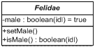
Класът е представен като правоъгълник, разделен на 3 части, разположени една под друга. В най-горната част е дефинирано името на класа. В следващата част след него са атрибутите (термин от UML) на класа (в Java се наричат член-променливи и свойства). Най-отдолу са операциите (в UML) или методите (в Java). Плюсът/минусът в началото указват дали атрибутът/операцията са видими (+ означава public) или невидими (- означава private). Protected членовете се означават със символа #.
Клас-диаграма – генерализация – пример
Ето пример за клас диаграма, показваща генерализация:
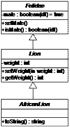
В този пример стрелките означават генерализация или наследяване.
Асоциации
Асоциациите представляват връзки между класовете. Те моделират взаимоотношения. Могат да дефинират множественост (1 към 1, 1 към много, много към 1, 1 към 2, ..., и много към много).
Асоциация много към много (many-to-many) се означава по следния начин:
Асоциация много към много (many-to-many) по атрибут се означава по следния начин:
В този случай има свързващи атрибути, които показват в кои променливи се държи връзката между класовете.
Асоциация едно към много (one-to-many) се означава така:
Асоциация едно към едно (one-to-one) се означава така:
От диаграма към класове
От клас-диаграмите най-често се създават класове. Диаграмите улесняват и ускоряват дизайна на класовете на един софтуерен проект.
От горната диаграма можем директно да създадем класове. Ето класът Country:
|
Country.java |
|
package introjavabook;
public class Country {
/** Country's capital. */ private Capital capital;
// ...
public Capital getCapital() { return capital; }
public void setCapital(Capital capital) { this.capital = capital; }
// ... } |
Ето и класа Capital:
|
Capital.java |
|
package introjavabook;
public class Capital { } |
Агрегация
Агрегацията е специален вид асоциация. Тя моделира връзката "цяло / част". Агрегат наричаме родителския клас. Компоненти наричаме агрегираните класове. В единия край на агрегацията има празен ромб:
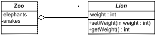
Композиция
Запълнен ромб означава композиция. Композицията е агрегация, при която компонентите не могат да съществуват без агрегата (родителя):
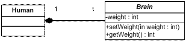
Абстракция (Abstraction)
Следващият основен принцип от обектно-ориентираното програмиране, който ще разгледаме, е "абстракция". Абстракцията означава да работим с нещо, което знаем как да използваме, но не знаем как работи вътрешно. Например имаме телевизор. Не е нужно да знаем как работи телевизорът отвътре, за да го ползваме. Нужно ни е само дистанционното, и с малък брой бутони (интерфейс на дистанционното) можем да гледаме телевизия.
Същото се получава и с обектите в ООП. Ако имаме обект Лаптоп и той се нуждае от процесор, просто използваме обекта Процесор. Не знаем (или по-точно не се интересуваме) как той смята вътрешно. За да го използваме, е достатъчно да извикваме метода сметни() с подходящи параметри.
Абстракцията е нещо, което правим всеки ден. Това е действие, при което игнорираме всички детайли, които не ни интересуват от даден обект и разглеждаме само детайлите, които имат значение за проблема, който решаваме. Например в хардуера съществува абстракция "устройство за съхранение на данни", което може да бъде твърд диск, USB memory stick, флопи диск или CD-ROM устройство. Всяко от тях работи вътрешно по различен начин, но от гледна точка на операционната система и на програмите в нея те се използват по еднакъв начин – на тях се записват файлове и директории. В Windows имаме Windows Explorer и той умее да работи по еднакъв начин с всички устройства, независимо дали са твърд диск или USB stick. Той работи с абстракцията "устройство за съхранение на данни" (storage device) и не се интересува как точно данните се четат и пишат. За това се грижат драйверите за съответните устройства. Те се явяват конкретни имплементации на интерфейса "устройство за съхранение на данни".
Абстракцията е една от най-важните концепции в програмирането и в ООП. Тя ни позволява да пишем код, който работи с абстрактни структури от данни (например списък, речник, множество и други). Имайки абстрактния тип данни ние можем да работим с него през неговия интерфейс, без да се интересуваме от имплементацията му. Например можем да запазим във файл всички елементи на списък, без да се интересуваме дали той е реализиран с масив, чрез свързана имплементация или по друг начин. Този код остава непроменен, когато работим с различни конкретни типове данни. Дори можем да пишем нови типове данни (които се появяват на по-късен етап) и те да работят с нашата програма, без да я променяме.
Абстракцията ни позволява и нещо много важно – да дефинираме интерфейс на нашите програми, т.е. да дефинираме всички задачи, които тази програма може да извърши, както и съответните входни и изходни данни. Така можем да направим няколко по-малки програми, всяка от които да извършва някаква по-малка задача. Това, допълнено от факта, че можем да работим с абстрактни данни, ни дава голяма гъвкавост при свързването на тези по-малки програми в една по-голяма и ни дава повече възможности за преизползване на код. Тези малки подпрограми се наричат компоненти. Този начин на писане на програми намира широко приложение в практиката, защото ни позволява не само да преизползваме обекти, а дори цели подпрограми.
Абстракция – пример за абстрактни данни
Ето един пример, в който дефинираме конкретен тип данни "африкански лъв", но след това го използваме по абстрактен начин – чрез абстракцията "лъв". Тази абстракция не се интересува от детайлите на всички видове лъвове.
|
AbstractDataExample.java |
|
package introjavabook;
public class AbstractDataExample { public static void main(String... args) {
Lion lion = new Lion(true, 150); Felidae bigCat1 = lion;
AfricanLion africanLion = new AfricanLion(); Felidae bigCat2 = africanLion; } } |
Интерфейси
В езика Java интерфейсът е дефиниция на роля (на група абстрактни действия). Той дефинира какво поведение трябва да има един обект, без да указва как точно се реализира това поведение.
Един обект може да има много роли (да имплементира много интерфейси) и ползвателите му могат да го използват от различни гледни точки.
Например един обект Човек може да има ролите Военен (с поведение "стреляй по противника"), Съпруг (с поведение "обичай жена си"), Данъкоплатец (с поведение "плати си данъка"). Всеки човек обаче имплементира това поведение по различен начин: Иван си плаща данъците навреме, Георги – не навреме, Петър – въобще не ги плаща.
Някой може да попита защо най-базовият за всички обекти клас Object не е всъщност интерфейс. Причината е, че тогава всеки клас щеше да трябва да имплементира група методи, а това би отнемало излишно време. Оказва се, че и не всеки клас има нужда от специфична реализация, тоест имплементацията по подразбиране върши работа в повечето случаи. От класа Object не е нужно да се пренапише (повторно имплементира) никой метод, но ако се наложи, това може да се направи. Пренаписването на методи е обяснено в детайли след малко.
Интерфейси – ключови понятия
В интерфейса може да има само декларации на методи и константи.
Декларация на метод (method declaration) е съвкупността от връщания тип на метода + сигнатурата на метода. Връщаният тип е просто за яснота какво ще върне метода.
Сигнатура на метод (method signature) е съвкупността от името на метода + описание на параметрите (тип и последователност). В един клас/интерфейс всички методи трябва да са с различни сигнатури и да не съвпадат със сигнатури на наследени методи.
|
|
Това, което идентифицира един метод, е неговата сигнатура. Връщаният тип не е част нея. Причината е, че ако два метода се различават само по връщания тип (например два класа, които се наследяват един друг), то не може еднозначно да се идентифицира кой метод трябва да се извика. |
Имплементация на клас/метод (class/method implementation) е тялото със сорс код на класа/метода. Най често е заключено между скобите { и }. При методите се нарича още тяло на метод.
Интерфейси – пример
Интерфейсът в Java се дефинира с ключовата думичка interface. В него може да има само декларации на методи, както и статични променливи (за константи например). Ето един пример за интерфейс:
|
Reproducible.java |
|
package introjavabook;
public interface Reproducible { Mammal[] reproduce(Mammal mate); } |
Ето как изглежда и класа Lion, който имплементира интерфейса Reproducible:
|
Lion.java |
|
package introjavabook;
public class Lion extends Felidae implements Reproducible { // ...
public Mammal[] reproduce(Mammal anotherLion) { return new Mammal[]{new Lion(), new Lion()}; } } |
В интерфейса методите само се декларират, имплементацията е в класа, който имплементира интерфейса - Lion.
Класът, който имплементира даден интерфейс, трябва да имплементира всеки метод от него. Изключение – ако класът е абстрактен, тогава да имплементира нула, няколко или всички методи. Всички останали методи имплементират в някой от класовете наследници.
Абстракция и интерфейси
Най-добрият начин да се реализира абстракция е да се работи с интерфейси. Един компонент работи с интерфейси, които друг имплементира. Така подмяната на втория компонент няма да се отрази на първия, стига новият компонент да имплементира старите интерфейси. Интерфейсът се нарича още договор (contract). Всеки компонент, имплементирайки един интерфейс, спазва определен договор. Така два компонента, стига да спазват правилата на договора, могат да общуват един с друг, без да знаят как работи другата страна.
Примери за важни интерфейси от Java collections framework са java. util.List и java.util.Collection. Всички стандартни колекции имплементират тези интерфейси и различните компоненти си прехвърлят различни имплементации (масиви или свързани списъци, хеш-таблици, червено-черни дървета и др.) винаги под общ интерфейс. Ето как изглежда част от йерархията на колекциите в Java:
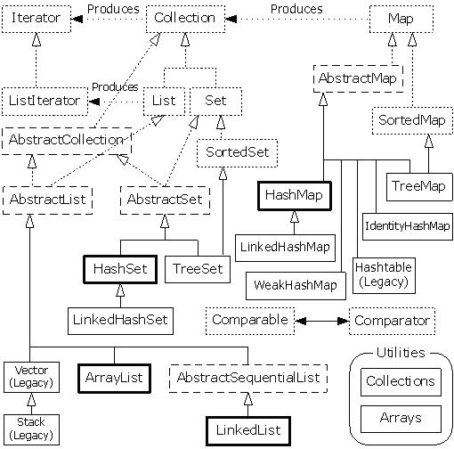
Колекциите са един отличен пример на обектно-ориентирана библиотека с класове и интерфейси, при която се използват много активно всички основни принципи на ООП: абстракция, наследяване, капсулация и полиморфизъм. От картинката се вижда, че абстрактните типове данни са дефинирани като интерфейси (Collection, List, Set, Map и други), а конкретните им имплементации са техни преки или непреки наследници в йерархията (ArrayList, LinkedList, HashSet, HashMap, TreeMap и други).
Кога да използваме абстракция и интерфейси?
Отговорът на този въпрос е: винаги, когато искаме да постигнем абстракция на данни или действия, чиято имплементация по-късно може да се подмени. Написаният код срещу интерфейси е много по-издръжлив срещу промени, отколкото написаният срещу конкретни класове. Работата през интерфейси е често срещана и силно препоръчвана практика – едно от основните правила за писане на качествен код.
Кога да пишем интерфейси?
Винаги е добра идея да се използват интерфейси, когато се предоставя функционалност на друг компонент. В интерфейса се слага само функционалността (като декларация), която другите трябва да виждат.
Вътрешно в една програма/компонент интерфейсите могат да се използват за дефиниране на роли. Така един обект може да се използва от много класове чрез различните му роли.
Капсулация (Encapsulation)
Капсулацията е един от основните принципи на обектно-ориентираното програмиране. Тя се нарича още "скриване на информацията" (information hiding). Един обект трябва да предоставя на ползвателя си само необходимите средства за управление. Една Секретарка ползваща един Лаптоп знае само за екран, клавиатура и мишка, а всичко останало е скрито. Тя няма нужда да знае за вътрешността на Лаптопа, защото не й е нужно и може да оплеска нещо. Тогава част от свойствата и методите остават скрити за нея.
Изборът какво е скрито и какво е публично видимо е на този, който пише класа. Когато програмираме трябва да дефинираме като private (скрит) всеки метод или поле, които не ползваме от друг клас.
Капсулация – примери
Ето един пример за скриване на методи, които не е нужда да са известни на потребителя, а се ползват вътрешно само от автора на класа. Първо дефинираме абстрактен клас Felidae, който дефинира публичните операции на котките (независимо какви точно котки имаме):
|
Felidae.java |
|
package introjavabook;
public abstract class Felidae { // Latin for cat // ...
public abstract void walk(); } |
Ето как изглежда класът Lion:
|
Lion.java |
|
package introjavabook;
public class Lion extends Felidae implements Reproducable { // ...
private movePaw(Paw paw) { // ... }
@Override public void walk() { this.movePaw(frontLeft); this.movePaw(frontRight); this.movePaw(bottomLeft); this.movePaw(bottomRight); } } |
Публичният метод walk() извиква 4 пъти някакъв друг скрит (private) метод. Така интерфейсът (в този случай абстрактният клас) е кратък – само един метод. Имплементацията обаче извиква друг метод, също част от имплементацията, но скрит за ползвателя на класа. Така класът Lion не разкрива публично информация за това как работи вътрешно и това му дава възможност на по-късен етап да промени имплементацията си без останалите класове да разберат (и да имат нужда от промяна).
Друг пример за абстракция е класът ArrayList от стандартните библиотеки на Java. Ако отворим сорс кода на този клас, ще видим, че в него има десетки полета и методи, които са дефинирани като private (скрити) и са достъпни само вътрешно от класа:
|
ArrayList.java |
|
package java.util;
public class ArrayList<E> extends AbstractList<E> implements List<E>, RandomAccess, Cloneable, Serializable { private static final long serialVersionUID = 8683452581122892189L; private transient Object[] elementData; private int size;
private void fastRemove(int index) { ... } private void rangeCheck(int index) { ... } private void writeObject(ObjectOutputStream s) { ... } private void readObject(ObjectInputStream s) { ... } } |
Както виждаме, освен познатите ни публични методи в класа ArrayList има и скрити неща. Това са вътрешните структури, съхраняващи елементите на структурата (elementData и size) и някои тайни методи, които не би трябвало да се извикват извън класа. Скриването на тези детайли гарантира, че никой освен самия клас ArrayList няма да бута директно по данните и така няма да има възможност да сбърка нещо. Ако всички полета в ArrayList бяха дефинирани като публични, щеше да е много трудно да накараме потребителите да обновяват в синхрон променливите size и elementData. Понеже тези променливи са скрити, класът ArrayList се грижи вътрешно за тях и няма опасност някой да ги разбута.
Полиморфизъм (Polymorphism)
Следващият основен принцип от обектно-ориентираното програмиране е "полиморфизъм". Полиморфизмът позволява третирането на обекти от наследен клас като обекти от негов базов клас. Например големите котки (базов клас) хващат жертвите си (метод) по различен начин. Лъвът (клас наследник) ги дебне, докато Гепардът (друг клас-наследник) просто ги надбягва.
Полиморфизмът дава възможността да третираме произволна голяма котка просто като голяма котка и да кажем "хвани жертвата си", без значение каква точно е голямата котка.
Полиморфизмът може много да напомня на абстракцията, но в програмирането се свързва най-вече с пренаписването (override) на методи в наследените класове с цел промяна на оригиналното им поведение, наследено от базовия клас. Абстракцията се свързва със създаването на интерфейс на компонент или функционалност (дефиниране на роля). Пренаписването на методи ще разгледаме в детайли след малко.
Абстрактни класове
Какво става, ако искаме да кажем, че класът Felidae е непълен и само наследниците му могат да имат инстанции? Това става с ключовата дума abstract пред името на класа и означава, че класът не е готов и не може да бъде инстанциран. Такъв клас се нарича абстрактен клас. А как да укажем коя точно част от класа не е пълна? Това отново става с ключовата дума abstract пред името на метода, който трябва да бъде имплементиран. Този метод се нарича абстрактен метод и не може да притежава имплементация, а само декларация.
Всеки клас, който има поне един абстрактен метод, трябва да бъде абстрактен. Логично, нали? Обратното, обаче не е в сила. Възможно е да дефинирам клас като абстрактен дори когато в него няма нито един абстрактен метод.
Абстрактните класове са нещо средно между клас и интерфейс. Те могат да дефинират обикновени методи и абстрактни методи. Обикновените методи имат тяло (имплементация), докато абстрактните методи са празни (без имплементация) и са оставени да бъдат реализирани от класовете-наследници.
Абстрактен клас – примери
Да разгледаме един пример за абстрактен клас:
|
Felidae.java |
|
package introjavabook;
public abstract class Felidae {// Latin for cat
// ...
public boolean isMale() { return male; }
public void setMale(boolean male) { this.male = male; }
public abstract boolean catchPray(Object pray); } |
Забележете в горния пример как нормалните методи isMale() и setMale() имат тяло, а абстрактният метод catchPray() няма тяло.
|
Lion.java |
|
package introjavabook;
public class Lion extends Felidae { // ...
public boolean catchPray(Object pray) { super.hide(); this.ambush(); super.run(); // ... } } |
Ето още един пример за абстрактно поведение, реализирано чрез абстрактен клас и полиморфно извикване на абстрактен метод. Първо дефинираме абстрактния клас Animal:
|
Animal.java |
|
package introjavabook;
public abstract class Animal {
public void printInformation() { System.out.println("I am " + this.getClass().getSimpleName() + "."); System.out.println(getTypicalSound()); }
protected abstract String getTypicalSound(); } |
Дефинираме и класа Cat, който наследява абстрактния клас Animal и дефинира имплементация за абстрактния метод getTypicalSound():
|
Cat.java |
|
package introjavabook;
public class Cat extends Animal {
@Override protected String getTypicalSound() { return "Miaoooow!"; }
public static void main(String[] args) { Animal cat = new Cat(); cat.printInformation(); // Output: // I am Cat. // Miaoooow! } } |
В примера методът printInformation() от абстрактния клас свършва своята работа като разчита на резултата от извикването на абстрактния метод getTypicalSound(), който се очаква да бъде имплементиран по различен начин за различните животни (различните наследници на класа Animal). Различните животни издават различни звуци, но отпечатването на информация за животно е една и съща функционалност за всички животни и затова е изнесена в базовия клас.
Чист абстрактен клас
Абстрактните класове, както и интерфейсите не могат да се инстанцират. Ако се опитате да създадете инстанция на абстрактен клас, ще получите грешка по време на компилация. Понякога даден клас може да бъде деклариран като абстрактен дори и да няма нито един абстрактен метод, просто, за да се забрани директното му използване, без да се създава инстанция на негов наследник.
Чист абстрактен клас (pure abstract class) е абстрактен клас, който няма нито един имплементиран метод, както и нито една член променлива. Много напомня на интерфейс. Основната разлика е, че един клас може да имплементира много интерфейси и наследява само един клас (бил той и чист абстрактен клас).
В началото при съществуването на множествено наследяване не е имало нужда от интерфейси. За да бъде заместено, се е наложило да се появят интерфейсите, които да носят многото роли на един обект.
Виртуални методи
Метод, който може да се пренапише в клас наследник, се нарича виртуален метод (virtual method). Всички методи в Java са виртуални, без изрично да се дефинират като такива. Ако не искаме да бъдат виртуални, ги маркираме с ключовата дума final. Тогава никой клас-наследник не може да декларира и дефинира метод със същата сигнатура.
Виртуалните методи са важни за пренаписването на методи (method overriding), което е в сърцето на полиморфизма.
Виртуални методи – пример
Имаме клас, наследяващ друг, като и двата имат общ метод. И двата метода пишат на конзолата. Ето как изглежда класът Lion:
|
Lion.java |
|
package introjavabook;
public class Lion extends Felidae { // ...
public void catchPray(Object pray) { System.out.println("Lion.catchPray"); } } |
Ето как изглежда и класът AfricanLion:
|
AfricanLion.java |
|
package introjavabook;
public class AfricanLion extends Lion { // ...
public void catchPray(Object pray) { System.out.println("AfricanLion.catchPray"); } } |
Правим три опита за създаване на инстанции и извикване на метода catchPray.
|
VirtualMethodsExample.java |
|
package introjavabook;
public class VirtualMethodsExample {
public static void main(String... args) { { Lion lion = new Lion(); lion.catchPray(null); // Will print "Lion.catchPray" }
{ AfricanLion lion = new AfricanLion(); lion.catchPray(null); // Will print "AfricanLion.catchPray" }
{ Lion lion = new AfricanLion(); lion.catchPray(null); // Will print "AfricanLion.catchPray", because // the variable lion has value of type AfricanLion } } } |
В последния опит ясно се вижда как всъщност се извиква пренаписаният метод, а не базовият. Това се случва, защото се проверява кой всъщност е истинският клас, стоящ зад променливата, и се проверява дали той има имплементиран (пренаписан) този метод.
Пренаписването на методи се нарича още: припокриване (подмяна) на виртуален метод.
Както виртуалните, така и абстрактните методи могат да бъдат припокривани. Абстрактните методи всъщност представляват виртуални методи без конкретна имплементация. Всички методи, които са дефинирани в даден интерфейс са абстрактни и следователно виртуални, макар и това да не е дефинирано изрично.
Виртуални методи и скриване на методи
В горния пример имплементацията на базовия клас остана скрита и неизползвана. Ето как можем да ползваме и нея като част от новата имплементация (в случай че не искаме да подменим, а само да допълним старата имплементация):
|
Lion.java |
|
package introjavabook;
public class Lion extends Felidae { // ...
public void catchPray(Object pray) { System.out.println("Lion.catchPray"); } } |
Ето как изглежда и класът AfricanLion:
|
AfricanLion.java |
|
package introjavabook;
public class AfricanLion extends Lion { // ...
public boolean catchPray(Object pray) { System.out.println("AfricanLion.catchPray"); System.out.println("calling super.catchPray(pray)"); super.catchPray(pray); } } |
В този пример при извикването на AfricanLion.catchPray(…) ще се изпишат 3 реда на конзолата:
|
AfricanLion.catchPray calling super.catchPray(pray) Lion.catchPray |
Кога да използваме полиморфизъм?
Отговорът на този въпрос е прост: винаги, когато искаме да предоставим възможност имплементацията на даден метод да бъде подменен в клас-наследник. Добро правило е да се работи с възможно най-базовия клас или направо с интерфейс. Така промените върху използваните класове се отразяват в много по-малка степен върху класовете, които ние пишем. Колкото по-малко знае една програма за обкръжаващите я класове, толкова по-малко промени (ако въобще има някакви) трябва да претърпи тя.
Свързаност на отговорностите и функционално обвързване (cohesion и coupling)
Термините cohesion и coupling са неразривно свързани с ООП. Те допълват и дообясняват някои от принципите, които описахме до момента. Нека се запознаем с тях.
Свързаност на отговорностите (cohesion)
Понятието cohesion (свързаност на отговорностите) показва до каква степен различните задачи и отговорности на една програма или един компонент са свързани помежду си, т.е. колко фокусиранa е програмата в решаването на една единствена задача. Разделя се на силна свързаност (strong cohesion) и слаба свързаност (weak cohesion).
Силна свързаност на отговорностите (strong cohesion)
Когато кохезията (cohesion) е силна, това показва, че отговорностите и задачите на една единица код (метод, клас, компонент, подпрограма) са свързани помежду си и се стремят да решат общ проблем. Това е нещо, към което винаги трябва да се стремим. Strong cohesion е типична характеристика на висококачествения софтуер.
Силна свързаност за клас
Силна свързаност на отговорностите (strong cohesion) в един клас означава, че този клас описва само един субект. По-горе споменахме, че един субект може да има много роли (Петър е военен, съпруг, данъкоплатец). Всички тези роли се описват в един и същ клас. Силната свързаност означава, че класът решава една задача, един проблем, а не много едновременно. Клас, който прави много неща едновременно е труден за разбиране и поддръжка. Представете си клас, който реализира едновременно хеш-таблица, предоставя функции за печатане на принтер, за пращане на e-mail и за работа с тригонометрични функции. Какво име ще дадем на този клас? Ако се затрудняваме в отговора на този въпрос, това означава, че нямаме силна свързаност на отговорностите (cohesion) и трябва да разделим класа на няколко по-малки, всеки от които решава само една задача.
Силна свързаност за клас – пример
Като пример за силна свързаност на отговорности можем да дадем класа java.lang.Math. Той изпълнява една единствена задача – предоставя математически изчисления и константи:
- Sin(), Cos(), Asin()
- Sqrt(), Pow(), Exp()
- Math.PI, Math.E
Силна свързаност за метод
Един метод е добре написан, когато изпълнява само една задача и я изпълнява добре. Метод, който прави много неща, свързани със съвсем различни задачи, има лоша кохезия и трябва да се раздели на няколко по-прости метода, които решават само една задача. И тук стои въпросът какво име ще дадем на метод, който търси прости числа, чертае 3D графика на екрана, комуникира по мрежата и печата на принтер справки, извлечени от база данни. Такъв метод има лоша кохезия и трябва да се раздели логически на няколко метода.
Слаба свързаност на отговорностите (weak cohesion)
Слаба свързаност се наблюдава при методи, които вършат по няколко задачи. Тези методи трябва да приемат няколко различни групи параметри, за да извършат различните задачи. Понякога това налага несвързани логически данни да се обединяват за точно такива методи. Използването на слаба кохезия (weak cohesion) е вредно и трябва да се избягва!
Слаба свързаност на отговорностите – пример
Ето един пример за клас, който има weak cohesion:
|
public class Magic { public void PrintDocument(Document d) { ... } public void SendEmail(string recipient, string subject, string text) { ... } public void CalculateDistanceBetweenPoints( int x1, int y1, int x2, int y2) { ... } } |
Добри практики за свързаност на отговорностите
Съвсем логично силната свързаност е "добрият" начин на писане на код. Понятието се свързва с по-прост и по-ясен сорс код – код, който по-лесно се поддържа и по-лесно се преизползва (поради по-малкия на брой задачи, които той изпълнява).
Обратно, при слаба свързаност всяка промяна е бомба със закъснител, защото може да засегне друга функционалност. Понякога една логическа задача се разпростира върху няколко модула и така промяната й е по-трудоемка. Преизползването на код също е трудно, защото един компонент върши няколко несвързани задачи и за да се използва отново, трябва да са на лице точно същите условия, което трудно може да се постигне.
Функционално обвързване (coupling)
Функционално обвързване (coupling) описва най-вече до каква степен компонентите / класовете зависят един от друг. Дели се на функционална независимост (loose coupling) и силна взаимосвързаност (tight coupling). Функционалната независимост обикновено идва заедно със слабата свързаност на отговорностите и обратно.
Функционална независимост (loose coupling)
Функционалната независимост (loose coupling) се характеризира с това, че единиците код (подпрограма / клас / компонент) общуват с други такива през ясно дефинирани интерфейси (договори) и промяната в имплементацията на един компонент не се отразява на другите, с които той общува. Когато пишете програмен код, не трябва да разчитате на вътрешни характеристики на компонентите (специфично поведение, неописано в интерфейсите).
Договорът трябва да е максимално опростен и да дефинира единствено нужните за работата на този компонент поведения, като скрива всички ненужни детайли.
Функционалната независимост е характеристика на кода, към която трябва да се стремите. Тя е една от отличителните черти на качествения програмен код.
Loose coupling – пример
Ето един пример, в който имаме функционална независимост между класовете и методите:
|
class Report { public boolean loadFromFile(String fileName) {…}
public boolean saveToFile(String fileName) {…} }
class Printer { public static int print(Report report) {…} }
class Example { public static void main(String[] args) { Report myReport = new Report(); myReport.loadFromFile("DailyReport.xml"); Printer.print(myReport); } } |
В този пример никой клас и никой метод не зависи от останалите. Методите зависят само от параметрите, които им се подават. Ако някой метод ни потрябва в следващ проект, лесно ще можем да го извадим и използваме отново.
Силна взаимосвързаност (tight coupling)
Силна взаимосвързаност имаме при много входни параметри и изходни параметри и при използване на неописани (в договора) характеристики на друг компонент (например зависимост от статични полета в друг клас). При използване на много т. нар. контролни променливи, които оказват какво да е поведението със същинските данни. Силната взаимосвързаност между два или повече метода, класа или компонента означава, че те не могат да работят независимо един от друг и че промяната в един от тях ще засегне и останалите. Това води до труден за четене код и големи проблеми при поддръжката му.
Tight coupling – пример
Ето един пример, в който имаме силна взаимосвързаност между класовете и методите:
|
class MathParams { public static double operand; public static double result; }
class MathUtil { public static void sqrt() { MathParams.result = calcSqrt(MathParams.operand); } }
class SpaceShuttle { public static void main(String[] args) { MathParams.operand = 64; MathUtil.sqrt(); System.out.println(MathParams.result); } } |
Такъв код е труден за разбиране и за поддръжка, а възможността за грешки при използването му е огромна. Помислете какво се случва, ако друг метод, който извиква sqrt() подава параметрите си през същите статични променливи operand и result.
Ако се наложи в следващ проект да използваме същата функционалност за извличане на корен квадратен, няма да можем просто да си копираме метода sqrt(), а ще трябва да копираме класовете MathParams и MathUtil заедно с всичките им методи. Това прави кода труден за преизползване.
Всъщност горният код е пример за лош код по всички правила на процедурното и обектно-ориентираното програмиране и ако се замислите, сигурно ще се сетите за още поне няколко неспазени препоръки, които сме ви давали до момента.
Добри практики за функционално обвързване
Добрата практика е да не се разчита на нищо повече от описаното в договора (интерфейса). Разбира се, добра практика е да се програмира срещу интерфейси, а не срещу конкретни класове (за това вече споменахме в секцията "Абстракция").
Добра практика е методите да са гъвкави и да са готови да работят с всички компоненти, които спазват интерфейса им, а не само с определени такива. Последното би означавало, че тези методи очакват нещо специфично от компонентите, с които могат да работят. Добра практика е също всички зависимости да са ясно описани и видими. Иначе поддръжката на такъв код става трудна (пълно е с подводни камъни).
Добър пример за strong cohesion и loose coupling е библиотеката Java collections framework (колекциите в Java). Класовете за работа с колекции имат силна кохезия. Всеки от тях решава една задача и позволява лесна преизползваемост. Тези класове притежават и другата характеристика на качествения програмен код: loose coupling. Класовете, реализиращи колекциите са необвързани един с друг. Всеки от тях работи през строго дефиниран интерфейс и не издава детайли за своята имплементация. Всички методи и полета, които не са от интерфейса, са скрити, за да се намали възможността за обвързване на други класове с тях. Методите в класовете за колекции не зависят от статични променливи и не разчитат на никакви входни данни, освен вътрешното си състояние и подадените им параметри. Това е добрата практика, до която рано или късно всеки програмист достига като понатрупа опит.
Код като спагети (spaghetti code)
Спагети код е неструктуриран код с неясна логика, труден за четене, разбиране и за поддържане. Това е код, в който последователността е нарушена и объркана. Това е код, който има weak cohesion и tight coupling. Този код се свързва се със спагети, защото също като тях е оплетен и завъртян. Като дръпнеш един спагет (т. е. един клас или метод), цялата чиния спагети може да се окаже, оплетена в него (т. е. промяна на един метод или клас води до още десетки други промени поради силната зависимост между тях). Спагети кодът е почти невъзможно да се преизползва, защото няма как да отделиш тази част от него, която върши работа.
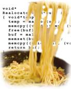
Спагети кодът се получава, когато сте писали някакъв код, след това сте го допълнили, след това изискванията са се променили и вие сте нагодили кода към тях, след това пак са се пременили и т.н. С времето спагетите се оплитат все повече и повече и идва момент, в който всичко трябва да се пренапише от нулата.
Cohesion и coupling в инженерните дисциплини
Ако си мислите, че принципите за strong cohesion и loose coupling се отнасят само за програмирането, дълбоко се заблуждавате. Това са здрави инженерни принципи, които ще срещнете в строителството, в машиностроенето, в електрониката и на още хиляди места.
Да вземем за пример един твърд диск:
Той решава една единствена задача, нали? Твърдият диск решава задачата за съхранение на данни. Той не охлажда компютъра, не издава звуци, няма изчислителна сила и не се ползва като клавиатура. Той е свързан с компютъра само с 2 кабела, т.е. има прост интерфейс за достъп и не е обвързан с другите периферни устройства. Твърдият диск работи самостоятелно и другите устройства не се интересуват от това точно как работи. Централния процесор му казва "чети" и той чете, след това му казва "пиши" и той пише. Как точно го прави е скрито вътре в него. Различните модели могат да работят по различен начин, но това си е техен проблем. Виждате, че един твърд диск притежава strong cohesion, loose coupling, добра абстракция и добра капсулация. Така трябва да реализирате и вашите класове – да вършат една задача, да я вършат добре, да се обвързват минимално с другите класове (или въобще да не се обвързват, когато е възможно), да имат ясен интерфейс и да добра абстракция и да скриват детайлите за вътрешната си работа.
Ето един друг пример: Представете си какво щеше да стане, ако на дънната платка на компютъра бяха запоени процесорът, твърдият диск, CD-ROM устройството и клавиатурата. Това означава, че като ви се повреди някой клавиш от клавиатурата, ще трябва да изхвърлите на боклука целия компютър. Виждате, че при tight coupling и weak cohesion хардуерът не може да работи добре. Същото се отнася и за софтуера.
Обектно-ориентирано моделиране (OOM)
Нека приемем, че имаме да решаваме определен проблем или задача. Този проблем идва обикновено от реалния свят. Той съществува в дадена реалност, която ще наричаме заобикаляща го среда.
Обектно-ориентираното моделиране (ООМ) е процес, свързан с ООП, при който се изваждат всички обекти, свързани с проблема, който решаваме (създава се модел). Изваждат се само тези техни характеристики, които са свързани с решаването на конкретния проблем. Останалите се игнорират. Така вече си създаваме нова реалност, която е опростена версия на оригиналната (неин модел), и то такава, че ни позволява да си решим проблема или задачата.
Например, ако моделираме система за продажба на билети, за един пътник важни характеристики биха могли да бъдат неговото име, неговата възраст, дали ползва намаление и дали е мъж или жена (ако продаваме спални места). Пътникът има много други характеристики, които не ни интересуват, примерно какъв цвят са му очите, кой номер обувки носи, какви книги харесва или каква бира харесва.
При моделирането се създава опростен модел на реалността с цел решаване на конкретната задача. При обектно-ориентираното моделиране моделът се прави със средствата на ООП: чрез класове, атрибути на класовете, методи в класовете, обекти, взаимоотношения между класовете и т.н. Нека разгледаме този процес в детайли.
Стъпки при обектно-ориентираното моделиране
Обектно-ориентираното моделиране обикновено се извършва в следните стъпки:
- Идентификация на класовете.
- Идентификация на атрибутите на класовете.
- Идентификация на операциите върху класовете.
- Идентификация на връзките между класовете.
Ще разгледаме кратък пример, с който ще ви покажем как могат да се приложат тези стъпки.
Идентификация на класовете
Нека имаме следната извадка от заданието за дадена система:
|
На потребителя трябва да му е позволено да описва всеки продукт по основните му характеристики, включващи име и номер на продукта. Ако бар-кодът не съвпада с продукта, тогава трябва да бъде генерирана грешка на екрана за съобщения. Трябва да има дневен отчет за всички транзакции, специфицирани в секция 9. |
Ето как идентифицираме ключовите понятия:
|
На потребителя трябва да му е позволено да описва всеки продукт по основните му характеристики, включващи име и номер на продукта. Ако бар-кодът не съвпада с продукта, тогава трябва да бъде генерирана грешка на екрана за съобщения. Трябва да има дневен отчет за всички транзакции, специфицирани в секция 9. |
Току-що идентифицирахме класовете, които ще ни трябват. Имената на класовете са съществителните имена в текста, най-често нарицателни в единствено число, например Студент, Съобщение, Лъв. Избягвайте имена, които не идват от текста, примерно: СтраненКлас, АдресКойтоИмаСтудент.
Понякога е трудно да се прецени дали някой предмет или явление от реалния свят трябва да бъде клас. Например адресът може да е клас Address или символен низ. Колкото по-добре проучим проблема, толкова по-лесно ще решим кое трябва да е клас. Когато даден клас стане прекалено голям и сложен, той трябва да се декомпозира на няколко по-малки класове.
Идентификация на атрибутите на класовете
Класовете имат атрибути (характеристики), например: класът Student има име, учебно заведение и списък от курсове. Не всички характеристики са важни за софтуерната система. Например: за класа Student цвета на очите е несъществена характеристика. Само съществените характеристики трябва да бъдат моделирани.
Идентификация на операциите върху класовете
Всеки клас трябва да има ясно дефинирани отговорности – какви обекти или процеси от реалния свят представя, какви задачи изпълнява. Всяко действие в програмата се извършва от един или няколко метода в някой клас. Действията се моделират с операции (методи).
За имената на методите се използват глагол + съществително. Примери: PrintReport(), ConnectToDatabase(). Не може веднага да се дефинират всички методи на даден клас. Дефинираме първо най-важните методи – тези, които реализират основните отговорности на класа. С времето се появяват още допълнителни методи.
Идентификация на връзките между класовете
Ако един студент е от определен факултет и за задачата, която решаваме, това е важно, тогава студент и факултет са свързани. Тоест класът Факултет има списък от Студенти. Тези връзки наричаме още асоциации (спомнете си секцията "клас-диаграми").
Нотацията UML
UML (Unified Modelling Language) бе споменат в секцията за наследяване. Там разгледахме клас-диаграмите. UML нотацията дефинира още няколко вида диаграми. Нека разгледаме накратко някои от тях.
Use case диаграми (случаи на употреба)
Използват се при извличане на изискванията за описание на възможните действия. Актьорите (actors) представят роли (типове потребители).
Случаите на употреба (use cases) описват взаимодействие между актьорите и системата. Use case моделът е група use cases – предоставя пълно описание на функционалността на системата.
Use case диаграми – пример
Ето как изглежда една sequence диаграма:
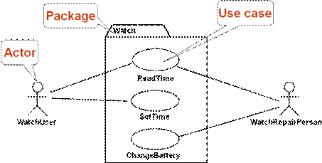
Актьорът е някой, който взаимодейства със системата (потребител, външна система или примерно външната среда). Актьорът има уникално име и евентуално описание.
Един use case описва една от функционалностите на системата. Той има уникално име и е свързан с актьори. Може да има входни и изходни условия. Най-често съдържа поток от действия (процес). Може да има и други изисквания.
Sequence диаграми
Използват се при моделиране на изискванията за описание на процеси. За по-добро описание на use case сценариите. Позволяват описание на допълнителни участници в процесите. Използват се при дизайна за описание на системните интерфейси.
Sequence диаграми – пример
Ето как изглежда една sequence диаграма:
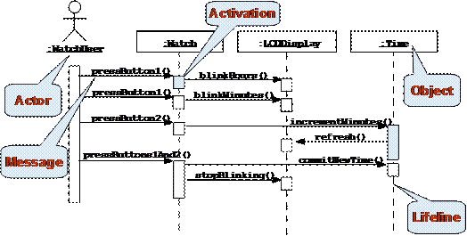
Класовете се представят с колони. Съобщенията (действията) се представят чрез стрелки. Участниците се представят с широки правоъгълници. Състоянията се представят с пунктирана линии.
Съобщения – пример
Посоката на стрелката определя изпращача и получателя на съобщението. Хоризонталните прекъснати линии изобразяват потока на данните:
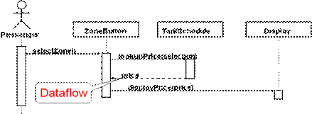
Statechart диаграми
Statechart диаграмите описват възможните състояния на даден процес и възможните преходи между тях. Представляват краен автомат:
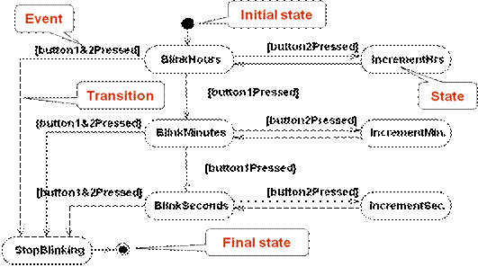
Activity диаграми
Представляват специален тип statechart диаграми, при които състоянията са действия. Показват потока на действията в системата:
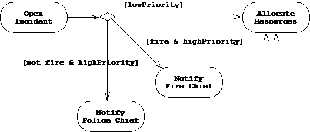
Шаблони за дизайн
Достатъчно време след появата на обектно-ориентираната парадигма се оказва, че съществуват множество ситуации, които се появяват често при писането на софтуер. Например клас, който трябва да има само една инстанция в рамките на цялото приложение.
Появяват се шаблоните за дизайн (design patterns) – популярни решения на често срещани проблеми от обектно-ориентираното моделиране. Част от тях са най-добре обобщени в едноименната книга на Ерих Гама "Design Patterns: Elements of Reusable Object Oriented Software" (ISBN 0-201-63361-2).
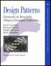Това е една от малкото книги на компютърна тематика, които остават актуални 15 години след издаването си. Шаблоните за дизайн допълват основните принципи на ООП с допълнителни добре известни решения на добре известни проблеми. Добро място за започване на разучаването им е статията за тях в Уикипедия: http://en.wikipedia.org/wiki/ Design_pattern (computer science).
{kind=link}
Шаблонът Singleton
Това е най-популярният и използван шаблон. Позволява на определен клас да има само една инстанция и дефинира откъде да се вземе тази инстанция. Типични примери са класове, които дефинират връзка към единствени неща (виртуалната машина, операционна система, мениджър на прозорците при графично приложение, файлова система), както и класовете от следващия шаблон (factory).
Шаблонът Singleton – пример
Ето примерна имплементация на шаблона Singleton:
|
Singleton.java |
|
package introjavabook;
public class Singleton {
// Single instance private static Singleton instance;
// Initialize the single instance static { instance = new Singleton(); }
// The method for taking the single instance public static Singleton getInstance() { return instance; }
// Private constructor – protects direct instantialion private Singleton(){} } |
Имаме скрит конструктор, за да ограничим инстанциите. Имаме статична променлива, която държи единствената инстанция. Инициализираме я еднократно в статичния конструктор на класа. Методът за вземане на инстанцията най-често се казва getInstance().
Шаблонът може да претърпи много оптимизации, например мързеливо инициализиране на единствената променлива за спестяване на памет, но това е класическата му форма.
Шаблонът Factory Method
Factory method е друг много разпространен шаблон. Той е предназначен да "произвежда" обекти. Инстанцирането на определен обект не се извършва директно, а се прави от factory метода. Това позволява на factory метода да реши коя конкретна инстанция да създаде. Решението може да зависи от външната среда, от параметър или от някаква системна настройка.
Шаблонът Factory Method – пример
Ще извадим един пример директно от Java платформата:
|
java.lang.Integer |
|
public final class Integer extends Number implements Comparable<Integer> {
// ...
public static Integer valueOf(String s) throws NumberFormatException { return new Integer(parseInt(s, 10)); }
// ...
} |
Методът valueOf(String) произвежда инстанция (число) на базата на символен низ. Има и параметър, който се подразбира - числото 10, което указва в каква бройна система се очаква да е числото в символния низ.
Шаблонът Factory Method – втори пример
Примерът отново е от стандартната библиотека на Java:
|
java.util.Calendar |
|
package java.util;
public abstract class Calendar implements Serializable,/*...*/ {
// ...
public static Calendar getInstance() { Calendar cal = createCalendar( TimeZone.getDefaultRef(), Locale.getDefault()); cal.sharedZone = true; return cal; }
private static Calendar createCalendar( TimeZone zone, Locale aLocale) {
// If the specified locale is a Thai locale, // returns a BuddhistCalendar instance. if ("th".equals(aLocale.getLanguage()) && ("TH".equals(aLocale.getCountry()))) { return new sun.util.BuddhistCalendar(zone, aLocale); } else if ("JP".equals(aLocale.getVariant()) && "JP".equals(aLocale.getCountry()) && "ja".equals(aLocale.getLanguage())) { return new JapaneseImperialCalendar(zone, aLocale); }
// else create the default calendar return new GregorianCalendar(zone, aLocale); } // ... } |
Можем да приемем, че и двата метода са factory методи. Методът getInstance() съобразява създаването на инстанцията с околната среда - локала (Locale) и часовата зона. После използва друг factory метод, който да създаде реално инстанцията.
Методът createCalendar() връща инстанция на класа, съобразена с локала (Locale) и часовата зона, подадени като параметри. На базата на тях се връща Будистки, Японски или Григориански календар.
Други шаблони
Съществуват десетки други добре известни шаблони за дизайн, но няма да се спираме подробно на тях. По-любознателните читатели могат да потърсят за "Design Patterns" в Интернет и да разберат за какво случат и как се използват шаблони като: abstract factory, prototype, adapter, composite, façade, command, iterator, observer и много други. Ако продължите да се занимавате с Java по-сериозно, ще се убедите, че цялата стандартна библиотека (Java API) е конструирана върху принципите на ООП и използва много активно класическите шаблони за дизайн.
Упражнения
1. Дефинирайте клас Human със свойства "собствено име" и "фамилно име". Дефинирайте клас Student, наследяващ Human, който има свойство "оценка". Дефинирайте клас Worker, наследяващ Human, със свойства "надница" и "изработени часове". Имплементирайте и метод "изчисли надница за 1 час", който смята колко получава работникът за 1 час работа, на базата на надницата и изработените часове. Напишете съответните конструктори и методи за достъп до полетата (свойства).
2. Инициализирайте масив от 10 студента и ги сортирайте по оценка в нарастващ ред. Използвайте Java интерфейса java.lang.Comparable.
3. Инициализирайте масив от 10 работника и ги сортирайте по заплата в намаляващ ред.
4. Дефинирайте клас Shape със само един метод calculateSurface() и полета width и height. Дефинирайте два нови класа за триъгълник и правоъгълник, които имплементират споменатия виртуален метод. Този метод трябва да връща площта на правоъгълника (height*width) и триъгълника (height*width/2). Дефинирайте клас за кръг с подходящ конструктор, при когото при инициализация и двете полета (height и width) са с еднаква стойност (радиуса), и имплементирайте виртуалния метод за изчисляване на площта. Направете масив от различни фигури и сметнете площта на всичките в друг масив.
5. Имплементирайте следните обекти: куче (Dog), жаба (Frog), котка (Cat), котенце (Kitten), котарак (Tomcat). Всички те са животни (Animal). Животните се
характеризират с възраст (age), име (name) и пол (gender). Всяко животно издава звук (виртуален метод на Animal).
Направете масив от различни животни и за всяко изписвайте на конзолата името,
възрастта и звука, който издава.
6. Изтеглете си някакъв инструмент за работа с UML и негова помощ генерирайте клас диаграма на класовете от предходната задача.
7. Прочетете за шаблона "abstract factory" и го имплементирайте.
Решения и упътвания
1. Задачата е тривиална. Просто следвайте условието и напишете кода.
2. Имплементирайте Comparable в Student и оттам просто сортирайте списък от Comparable. Можете да използвате и java.util.Arrays. sort(Object[]).
3. Задачата е като предната.
4. Имплементирайте класовете както са описани в условието на задачата. Тествайте решението си.
5. Изписването на информацията можете да го имплементирате във виртуалния метод java.lang.Object.toString(). За да принтирате съдържанието на целия масив, можете да ползвате статичния метод java.util.Arrays.toString(Object[]), който ще използва предефинирания от вас toString().
6. Можете да намерите списък с UML инструменти от следния адрес: http://en.wikipedia.org/wiki/List_of_UML_tools.
7. Можете да прочетете за шаблона "abstract factory" от Wikipedia: http://en.wikipedia.org/wiki/Abstract_factory_pattern.